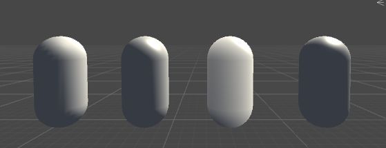

基本光照

Phong逐顶点 - Phong逐顶点 - HalfLambert - BlinnPhong
Phone光照模型
- 环境光(ambient)
- 自发光(emissive)
- 漫反射(diffuse)
- 高光反射(specular)
计算公式
cambient = gambient
cemissive = memissive
cdiffuse = (clight * mdiffuse)max(0, n * l)
cspecular = (clight * mspecular)max(0, v * r)mgloss
r = 2(n * l)n - l
其中r是反射方向。 在Unity中可以使用内置函数reflect计算。
半兰伯特(Half Lambert)模型
使用Lambert光照模型的一个缺点是背光面十分黑，一种视觉增强技术是Half Lambert模型，它没有任何物理上的依据。
cdiffuse = (clight * mdiffuse)(a(n * l) + b)
Blinn-Phong光照模型
h = (v + l) / | v + l | = normalize(v + l)